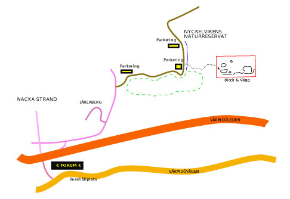
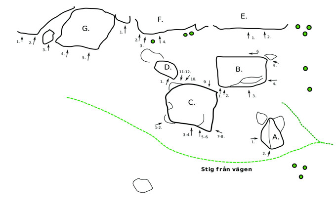

Nyckelviken
Allmänt
Området ligger stadsnära i Nyckelvikens naturreservat i Nacka och inhyser ca 40-talet problem.
Se även
Kulberget
för repklättring.
Förare 2008
(Numrering och antalet problem stämmer inte med denna "nyare" nätförare)
:
Media:nyckelviken.pdf
Karta & Vägbeskrivning

Bil
Åk väg 222 mot Nacka/värmdö. Tag av mot Nacka Strand sedan vänster i rondell och korsa motorvägen. Höger i nästa rondell och sedan följ skyltar mot
Nyckelviken
.
Buss
Åk buss från
Slussen
till
Forum Nacka
eller
Ektorp Centrum
och gå ca 20 minuter. Åker du till
Ektorp Centrum
kommer du gå förbi
väggen vid Nacka Sjukhus
.
Hitta från parkeringen
Blocken ligger på höger sida strax efter den vinkelräta kurvan på grusvägen på väg mot Nyckelviken.
Strax efter kurvan, på vänstra sidan finns en P-plats, parkera där. Gå över vägen följ ängens vänstra kant, förbi en sittbänk, mot skogsbrynet, gå ca 100 m in i skogen på en smal stig.
Översiktsbild

Block och -vägg indelning
A.
- 1
- Sälen
- 5C
- Båda händer på list under bulan, rakt upp.
- 2a
- Kantattack
- 5C
- Startar i list under näsan, använd endast kanten upp.
- 2b
- Valrossen
- 6A+
- Startar som "Kantattack" och upp via listerna på väggpartiet, kanten och nedre rampen ingår ej.
- 2c
- The Gimp
- 6A
- Startar som "Kantattack" men vandra vänsterunder listerna.
- 2d
- Pomoj
- 6A
- Det enda av problemen som går till höger efter starten. Starta med HH i stor jugg nere till höger, VH i startlisten till "Kantattack", matcha på kanten, lägg över VF på högra kanten, skicka HH till höger och klättra upp på den högra sidan.
B.
- 1
- Pusher
- 6A
- Startar med händer på krimp, klättra rakt upp för areten. Akta rygg å skalle!
- 2
- Pushing the Limit
- 7C?
- Samma start som "Pusher" men dra från det stora krimpet till sloperhyllan till höger, skicka VH på slopergaston, kliv upp och skicka till hyfsat krimpgrepp högt upp.
- 3
- Skämtet
- 7A
- Etablera dig i krimparna och skicka upp till sloperskanten.
- 4a
- Skämt å Sido
- 7A
- Starta i de goda greppen innan slopershyllan, följ hyllan upp till toppen.
- 4b
- No Fuckin Joke
- 7B+
- Starta krimpandes på slopergrepp, klättra upp till starten "Skämt å Sido" å fortsätt längs sloperhyllan opp till topps!.
- 4c
- Una Broma
- 6b+
- Starta krimpandes på slopergrepp, klättra upp till starten "Skämt å Sido" å toppa ut.Direkta Linien, rakt up.
- 5a
- Vandraren
- 6B+
- Starta längst till höger på sprucket block, klättra lågt, stor spricka upp till stenens topp ingår ej, använd krimplisterna istället. Avsluta upp i starten på "Skämt å Sido".
- 5b
- Söndagspromenad
- 5A
- Samma start som ovan fast följ upp i sprickan till vänster.
- 6a
- Uppvärmningen
- L
- Hangla dig från vänster till höger.
- 6b
- Uppvärmningen direkt
- L
- Starta i de två goda hålen o toppa ur rakt upp.
C.
- 1
- Struntar i etiken Vänster
- 6A
- Startar med händer på lilla blocket, mantla med hjälp av fotgrepp till vänstern OBS! stå ej på lilla blocket!
- 2
- Struntar i etiken Höger
- 6B+
- Samma som ovan fast dra till höger över kanten i stället.
- 3
- Projekt
- 7A+?
- Startar i startsprickan och klättra i dess längdriktning vidare på små grepp. Klättra över kanten.
- 4
- Herr Martin
- 6C
- Startar i startsprickan, upp via sloper, till utstickande grepp, skicka till kanten och klättra upp.
- 4b
- Fröken Niklas
- 6B+
- Startar i startsprickan, upp via sloper, känsligt bryt åt höger via fler sloopers.
- 5
- The Cambist
- 5C
- Problemet till höger om "Herr Martin", upp snett till vänster.
- 6
- Consolation
- 5C
- Startar på samma sätt som " The Cambist", klättra mer till höger.
- 7
- Genvägen
- 7A
- Som "Super Camakazi fast istället för att avsluta med att klättra under och runt stenen så klättrar du upp i kanten när du når slutet av stenen.
- 8
- Super Camakazi
- 7A+
- Startar längst till vänster och traversera till höger under kanten på slutet och upp, bitigare problem än var det ser ut att vara.
- 9a
- Martin´s Send
- 6A+
- Startar i kanten på stenen, sloper för VH och list under stenen för HH.
- 9b
- Camakazi
- 6A
- Startar i lister under stenen.
- 9c
- Camakazi assis
- 6C
- Starta i match på jugg längst ner till höger. Rumpan i ''marken''! Klättra in i Camakazi och upp.
- 10
- Martins håla V
- ?
- Sloper för VH och crimp för HH, använd ej rampen till fötterna vid start. Upp till vänster.
- 11
- Martins håla H
- ?
- Startar som "Martins håla" men dra till högra kanten, Wierdass!.
- 12
- Speculation
- ?
- För den lille, om det är möjligt starta nere i grottan...
D.
- 1
- Smygarn
- L
- Klättra längs den högra kanten upp.
E.
F.
- 1
- Fjällskravel
- L
- Klättra upp på stenen med den vassa högra kanten.
- 2a
- Holy Smoke
- 6C
- Balansigt och krimpigt, vänster finger till hål, HH i gastonlist, kliv upp, flagga med VF på väggen, skicka till nästa list, korsa över till jugg.
- 2b
- Pekfinger
- 6A+
- Etablerad start med vänster finger i hålet, HH på list. Skicka HH till gastonlist, VH till krimp...
- 3a
- Tall och Taff
- 6B+
- Klättra upp för areten.
- 3b
- For the tall and tough
- 6A
- Dyno till ngt vass månformad list lite till höger.
- 4a
- For the tall and tender
- 5B
- Använd månformade listen för att nå slutet dynamiskt.
- 4b
- Född utan Tänder
- 6B
- Klättra via listerna upp till den månformade listen...sträck på dig till slutgreppet!
- 5
- Jannas brant
- 5C
- Just vid gränsen mellan F och E. SS, Startgrepp=matcha stenes vassa högerkant, HF på högra berget endast vid start. Rakt upp via 2juggar. Avsluta ståendes med händerna i stora sprickan
G.
- 1
- Slutet
- 5C
- Klättra i det korta diedret rakt upp.
- 2
- Toaster
- 6?
- Hangeltravers för den som vågar. Knepig landning!
- 3
- Vandringen
- L
- No hands på ett litet block...
- 4
- Go gasch
- L
- Lättare än det ser ut att vara....
- 5
- Backa
- L
- Ngt trixigare än "Go gasch"...
- 6
- Joans travers
- 5c
- Starta vid "Go gasch", traversera t h runt hörnet, håll dig lågt! Krimpig
Category:Stockholm
Category:Nacka-Värmdö
Copyright (C) Permission is granted to copy, distribute and/or modify this document under the terms of the GNU Free Documentation License, Version 1.3